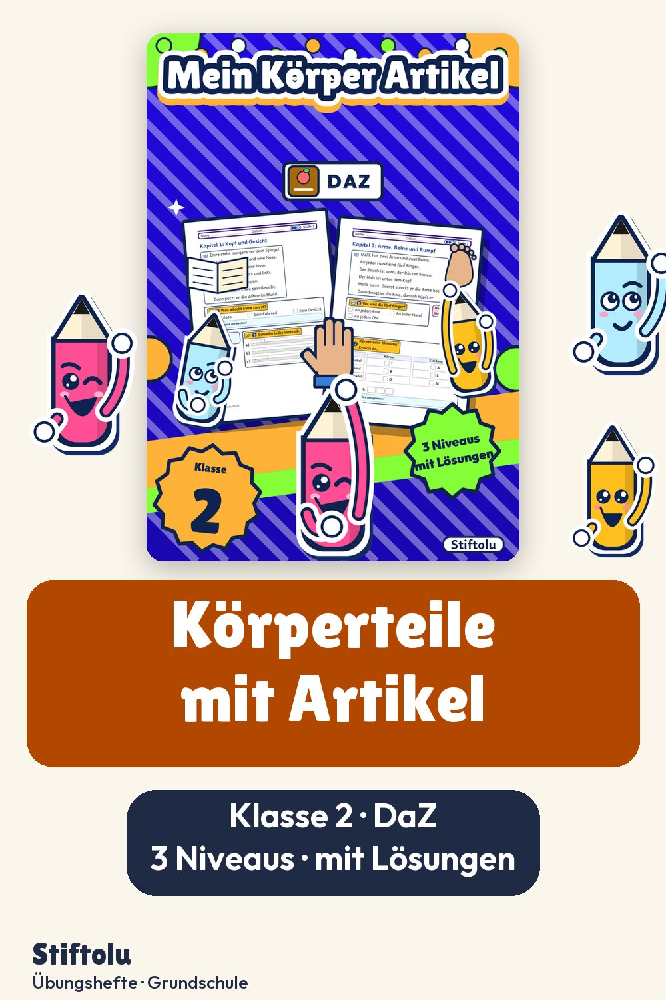
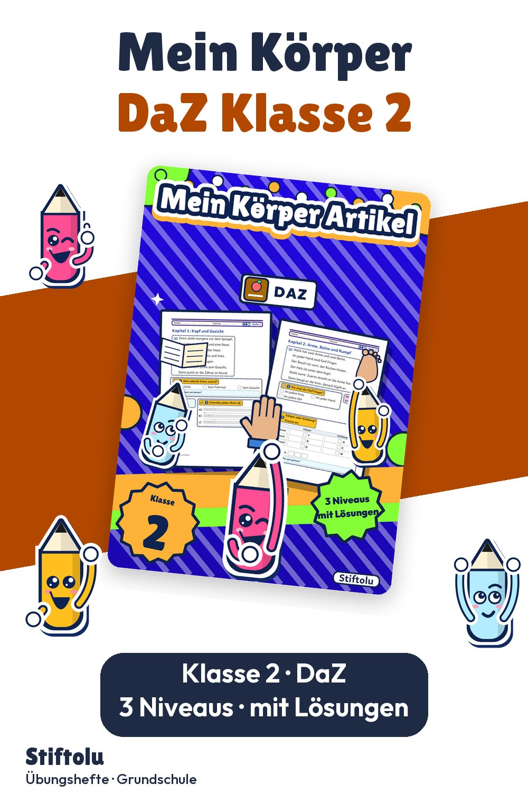

Werbung · Übungsheft von Stiftolu
Mein Körper auf Deutsch: Wörter mit Artikel in Klasse 2 (DaZ/DaF)


In der Turnhalle spielt die kleine Geschichte, die durch das Heft führt: Kinder in Klasse 2 benennen Körperteile, sortieren Wörter nach Körper und Kleidung und üben Einzahl und Mehrzahl. Gearbeitet wird in drei Niveaus vom Einzelwort bis zum kurzen Satz. Als PDF mit 28 Seiten erhältlich auf eduki, Shop Stiftolu.